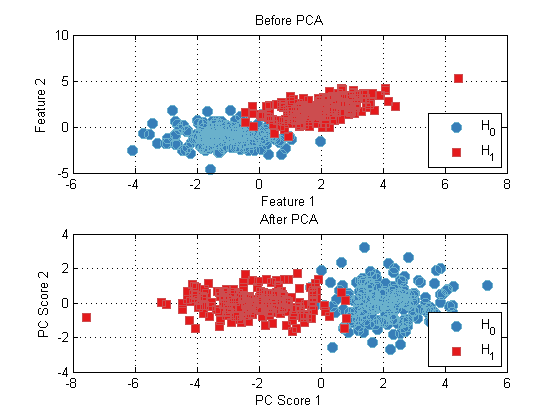

Pre processing data with the Pattern Recognition Toolbox
Often, you will want to perform some sort of pre processing on your data before peforming clasification or other operations. For example, many algorithms require the input data to be normalize to have zero-mean and unit variance.
Like all other prtAction objects, all prtPreProc objects inherit the TRAIN, RUN, CROSSVALIDATE and KFOLDS functions from the prtAction object. For more information on these methods, refer to section on the prtEngine.
Performing principle component analysis is another common example of pre processing, which is illustrated below.
ds = prtDataGenUnimodal; % Load a dataset preProc = prtPreProcPca('nComponents',2); % Create a pre processing object preProc = preProc.train(ds); % Train the object dsOut = preProc.run(ds); % Run the object on the dataset % Plot the old and new datasets subplot(2,1,1); plot(ds); title('Before PCA') subplot(2,1,2); plot(dsOut); title('After PCA')
Note that dsOut, the data has been reoriented by the principle component processing.
All pre processing objects in the Pattern Recognition Toolbox have the same API as discussed above. For a list of all the different pre processing techniques, and links to their individual help entries, A list of commonly used functions